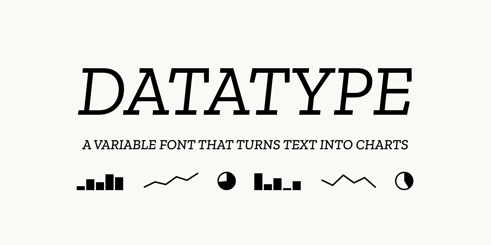
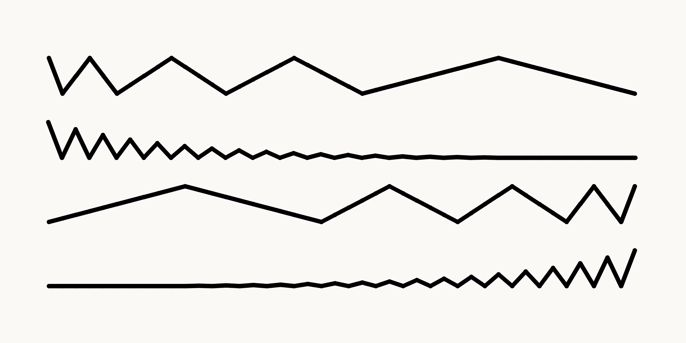
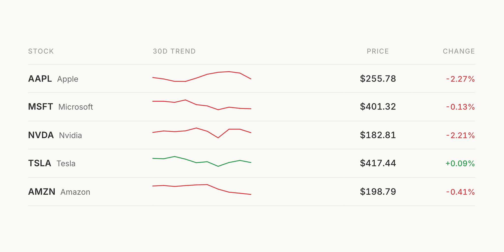
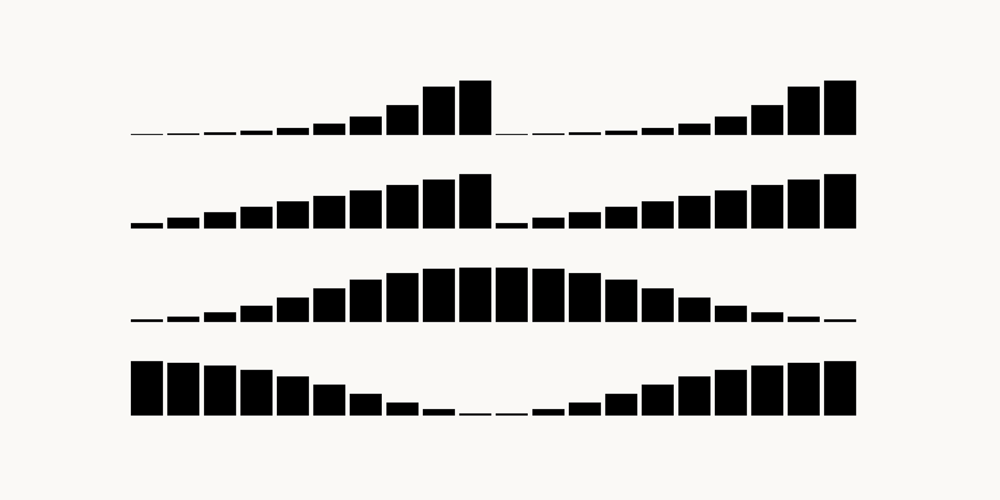
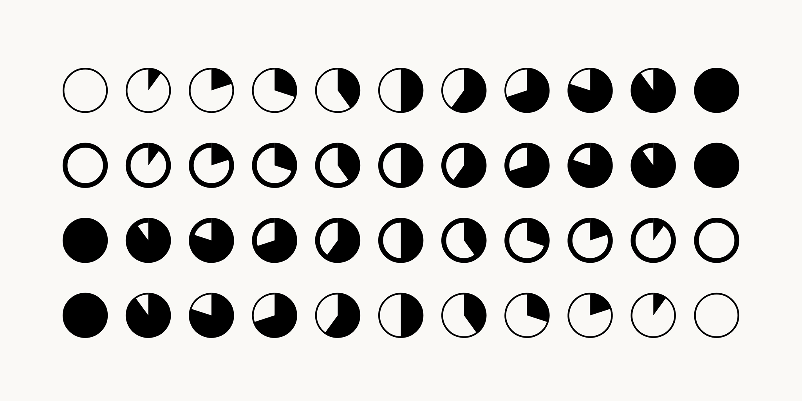

Datatype is a variable OpenType font that transforms simple text expressions into inline data visualizations—no JavaScript required. Using OpenType contextual alternates and ligature substitution, text like {b:30,70,50,90} automatically becomes a bar chart within your document.
Designed for seamless integration into text-based workflows, Datatype enables you to embed charts directly in emails, documentation, reports, and web content. The font supports three chart types: bar charts, sparklines (line charts), and pie charts, each activated through simple text syntax.
Chart Syntax:
{b:15,45,80,30,60} (up to 20 values, 0-100){l:10,40,25,70,50} (up to 20 points, 0-100){p:75} (single percentage value)The font includes two variable axes for extensive customization: Width (wdth: 0-100) controls spacing and compactness, while Weight (wght: 100-900) adjusts line thickness and visual prominence. This enables designers to fine-tune charts for different contexts—from dense dashboards to prominent presentations.
Datatype uses the Contextual Alternates (calt) feature for bar charts and sparklines, ensuring broad compatibility across applications including Google Docs, Sheets, and Slides. Pie charts utilize Standard Ligatures (liga), which may require manual enablement in some environments.
Built with fontTools and licensed under the SIL Open Font License 1.1, Datatype brings the power of inline data visualization to any application that supports OpenType features.
This font includes glyphs from IBM Plex™ Mono: Copyright 2017 IBM Corp. with Reserved Font Name "Plex"
To contribute, see github.com/franktisellano/datatype.




